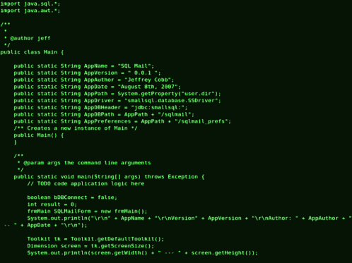

PHP se utiliza comúnmente en combinación con sistemas de gestión de bases de datos (SGBD) para crear aplicaciones web dinámicas que almacenan y recuperan información de una base de datos. Aquí hay una descripción básica de cómo PHP interactúa con bases de datos:
-
Conexión a la Base de Datos:
- Antes de realizar operaciones en una base de datos, es necesario establecer una conexión entre PHP y el SGBD. Esto se hace utilizando funciones como mysqli_connect o PDO (PHP Data Objects) en el caso de MySQL. Debes proporcionar detalles como el nombre de host, el nombre de usuario, la contraseña y el nombre de la base de datos.
$conexion = mysqli_connect("localhost", "usuario", "contraseña", "basededatos");
Ejecución de Consultas SQL:
- Una vez establecida la conexión, puedes ejecutar consultas SQL para interactuar con la base de datos. Esto puede incluir la inserción de nuevos datos, la actualización de registros existentes o la recuperación de información.
$consulta = "SELECT * FROM usuarios";
$resultado = mysqli_query($conexion, $consulta);
Recuperación de Datos:
- Después de ejecutar una consulta SELECT, puedes recuperar los datos obtenidos. Esto se hace generalmente a través de un bucle mientras se recorren los resultados.
while ($fila = mysqli_fetch_assoc($resultado)) {
echo "Nombre: " . $fila["nombre"] . "<br>";
}
Inserción de Datos:
- Para insertar nuevos datos en la base de datos, puedes ejecutar una consulta INSERT.
$nuevo_usuario = "INSERT INTO usuarios (nombre, correo) VALUES ('John Doe', 'john@example.com')";
mysqli_query($conexion, $nuevo_usuario);
Actualización y Eliminación de Datos:
- Las consultas UPDATE y DELETE se utilizan para modificar o eliminar registros existentes.
$actualizar_usuario = "UPDATE usuarios SET nombre='Jane Doe' WHERE id=1";
mysqli_query($conexion, $actualizar_usuario);
$eliminar_usuario = "DELETE FROM usuarios WHERE id=2";
mysqli_query($conexion, $eliminar_usuario);
Cierre de la Conexión:
- Es importante cerrar la conexión a la base de datos cuando ya no se necesite. Esto libera recursos y evita problemas de rendimiento.
mysqli_close($conexion);
Uso de Prepared Statements (Sentencias Preparadas):
- Para mejorar la seguridad y prevenir ataques de inyección SQL, se recomienda el uso de sentencias preparadas. Esto se puede lograr utilizando PDO o las funciones mysqli_prepare y mysqli_stmt_bind_param en MySQLi.
$consulta_preparada = $conexion->prepare("INSERT INTO usuarios (nombre, correo) VALUES (?, ?)");
$nombre = "John Doe";
$correo = "john@example.com";
$consulta_preparada->bind_param("ss", $nombre, $correo);
$consulta_preparada->execute();
